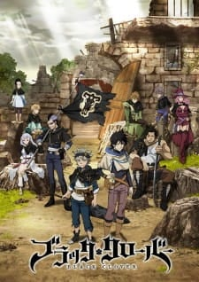
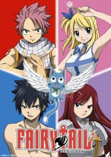
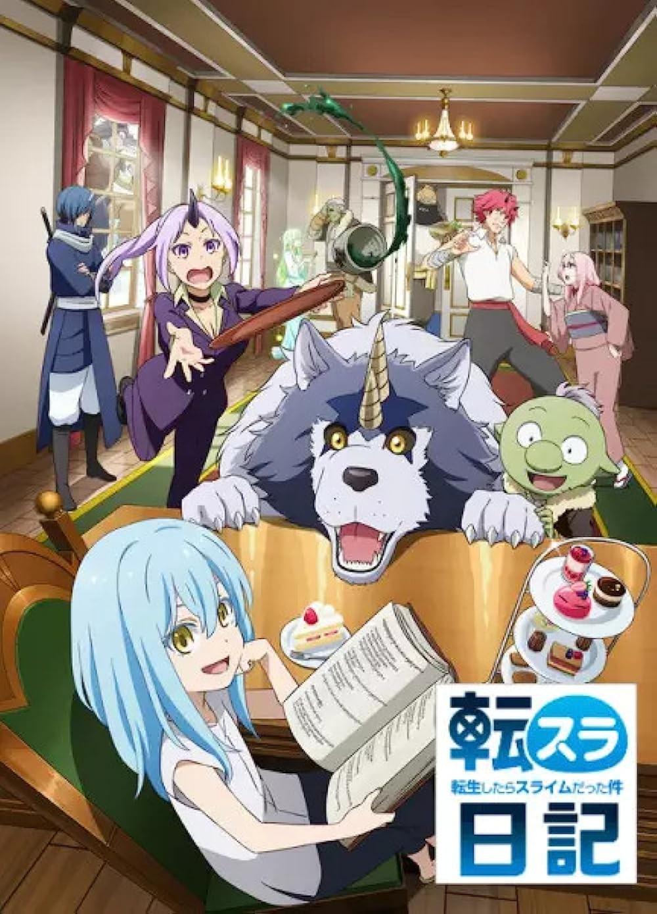
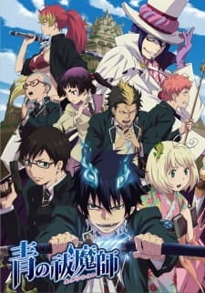

sobre animes
BLACK CLOVER
Sinopse: Asta e Yuno foram abandonados na mesma igreja no mesmo dia. Criados juntos quando crianças, elas conheceram o "rei do bruxo" - um título dado ao mago mais forte do reino - e prometeu que competiriam entre si pela posição do próximo rei do mago. No entanto, à medida que cresceram, a forte diferença entre eles ficou evidente. Enquanto Yuno é capaz de exercer magia com incrível poder e controle, Asta não pode usar magia e tenta desesperadamente despertar seus poderes treinando fisicamente.
Fairy Tail
Sinopse: No reino encantado de Fiore, a animada Lucy Heartfilia tem um desejo: se juntar à renomada cauda de fadas - uma das muitas guildas mágicas de mago espalhadas pelo continente. Felizmente, um encontro casual com Natsu Dragneel, a "Salamandra" de Fairy Tail, a levar a lendária guilda.
TENSURA NIKKI: TENSEI SHITARA SLIME DATTA KEN
Sinopse: Entre matar monstros e negociar com os países vizinhos, Rimuru Tempest tem as mãos cheias de seu reino ao lado de assuntos do dia-a-dia. Mas seja expandindo as fazendas no calor do verão ou neve de escavadeiras no inverno frio, nenhuma tarefa é grande demais para Rimuru e seus amigos!
AO NO EXORCIST
Sinopse: Humanos e demônios são dois lados da mesma moeda, assim como Assiah e Gehenna, seus respectivos mundos. A única maneira de viajar entre os reinos é pelos meios de posse, como nas histórias de fantasmas. No entanto, Satanás, o governante de Gehenna, não consegue encontrar um anfitrião adequado para possuir e, portanto, permanece preso em seu mundo. Em uma tentativa desesperada de conquistar Assiah, ele envia seu filho, pretendendo que ele se torne em um vaso capaz de posse do rei demônio.
FULLMETAL ALCHEMIST

Sinopse: Edward Elric, um jovem e brilhante alquimista, perdeu muito em sua vida de doze anos: quando ele e seu irmão Alphonse tentam ressuscitar sua mãe morta através do ato proibido de transmutação humana, Edward perde seu irmão e dois de seus membros . Com suas habilidades supremas de alquimia, Edward liga a alma de Alphonse a um grande traje de armadura.